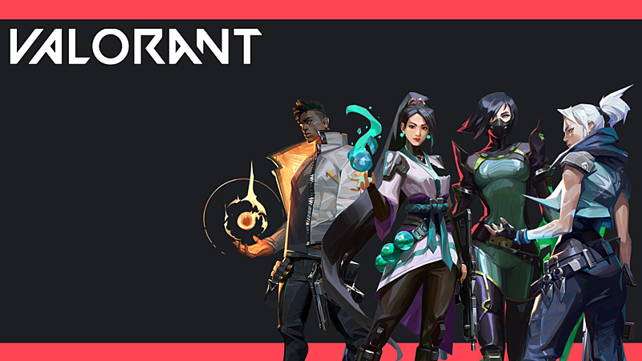

정밀한 실력 자랑, 굉장한 전리품, 숨 막히는 게임플레이와 짜릿한 경험까지. 모두 발로란트에서 무료로 즐길 수 있습니다. 발로란트에서는 각각 다섯 명으로 이루어진 공격팀과 수비팀이 24라운드 13선승제로 총격전을 벌입니다. 무엇보다 투명하고 공정한 게임플레이가 중요한 게임이기 때문에, 라이엇 게임즈에서는 발로란트를 위해 투자를 아끼지 않고 전례 없이 뛰어난 백엔드 시스템을 구축했습니다. 이 시스템은 전용 128틱 서버, 맞춤 제작 넷코드, 서버 권한 게임 아키텍처, 특유의 부정행위 방지 기능 등을 자랑합니다.
기본적으로 CS:GO과 동일한 시스템[19]에 오버워치처럼 다른 능력을 지닌 요원을 추가했다 하지만 오버워치와는 다르게 대부분의 스킬은 적을 잡는 것을 도와주는데에 초점이 맞춰져 있고 스킬 단독으로는 적을 잡기 매우 어렵다. 또한 체력도 모든 요원이 100으로 통일되어있는데 반해 총기의 대미지는 상당히 높아 교전이 상당히 짧은 편이다. 게다가 힐링 스킬은 일부 요원만 가지고 있는데다 아군을 힐링하는 스킬은 세이지의 회복구슬과 스카이의 재생 단 두개뿐이다. 위 특징때문에 발로란트는 소위 "총만 잘 쏘면 홀로 캐리가 가능한 게임"중 하나이다. 스킬을 전혀 사용하지 않아도 교전에는 큰 문제가 없는데다 그 스킬들도 적들의 위치를 단편적으로 보여주거나 연막을 치는 등 당장 눈 앞의 적을 잡는 데에는 쓸모가 없는 스킬이 대부분이다. 궁극기와 스킬 연계가 중요한 오버워치와는 사뭇 다른 양상을 띤다. 당장 발로란트 유튜버들만 봐도 에찍누로 이기는 모습이 종종 보인다. 다만 스킬의 비중이 그닥 적은 게임이라 할수도 없다. 연막과 시야 확보는 레인보우 식스 시즈에서의 선례가 그렇듯 교전이 짧은 FPS에선 존재만 한다면 게임의 판도를 뒤집는 상황이 나오기도 하며 스킬들에 달려 있는 강력한 CC기나 딜은 실력과 관계없이 본인이 우위를 점하기 쉽게 만들어준다. 따라서 캐쥬얼해 보이지만 에임과 스킬 활용 모두 받쳐줘야 하는 나름 진입 장벽이 있는 게임.
